ACADEMIA
Cisco Networking Academy
Academia global de cursos nas áreas de redes, cibersegurança, IA e ciência de dados, programação e competências em TI.
AcessarPORTFÓLIO PESSOAL
Estudante e entusiasta na área tecnológica, com curiosidade e interesse em aprender, criar, desenvolver, e solucionar problemas e conectar pessoas a soluções inteligentes.
SOBRE MIM
Sou alguém que valoriza a autenticidade, a honestidade e a justiça, e acredito que somos definidos não apenas pelo que fazemos, mas pelos princípios e valores que carregamos e pelo impacto que deixamos nas pessoas.
Neste portfólio, reúno a minha evolução profissional, acadêmica e grandes projetos que refletem a minha paixão em tecnologia e em criar soluções que agregam valor.
E conhecimentos que vão desde fundamentos da bolha tecnológica até inteligência em negócios
Conheça minha trajetóriaRECOMENDAÇÕES
ACADEMIA
Academia global de cursos nas áreas de redes, cibersegurança, IA e ciência de dados, programação e competências em TI.
Acessar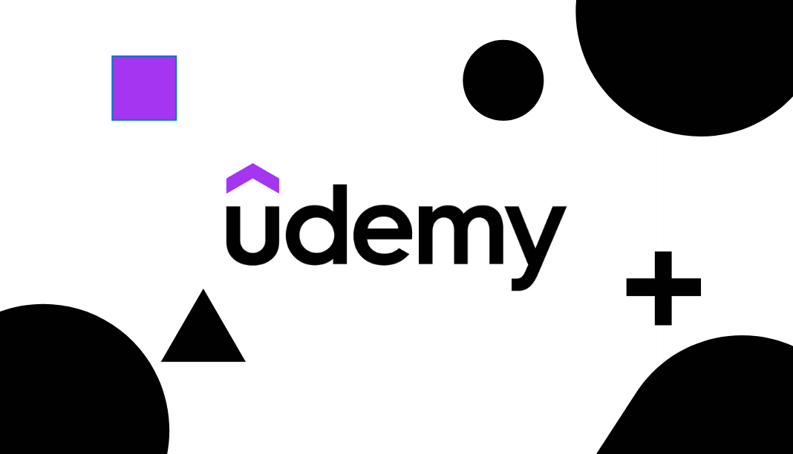
ACADEMIA
Plataforma global que reúne milhares de cursos como programação, inteligência artificial, negócios, marketing, design e produtividade.
Acessar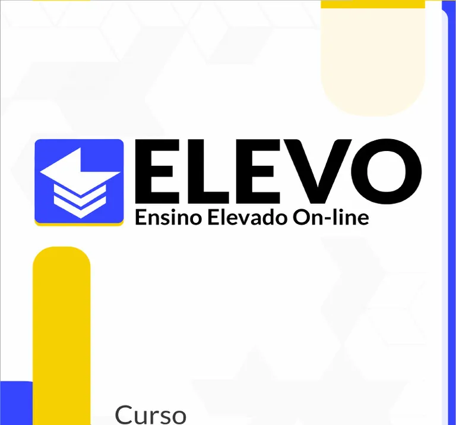
ACADEMIA
Plataforma brasileira de cursos livres, capacitação profissional de 6 a 400 horas, 100% online e gratuíta.
Acessar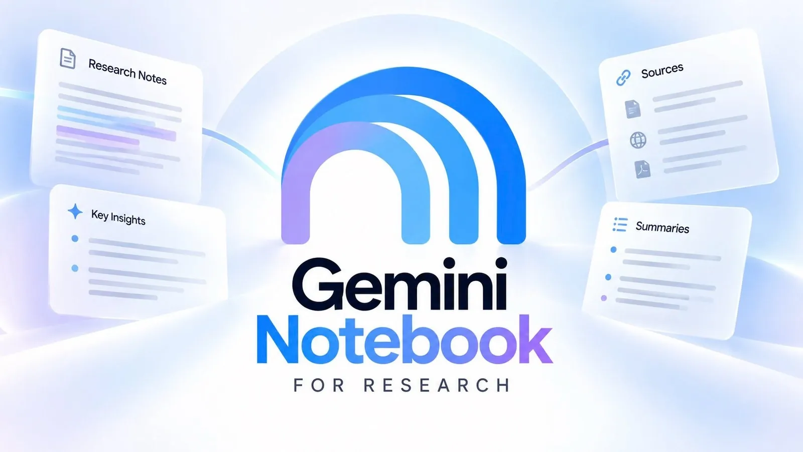
FERRAMENTA DE IA
Assistente de pesquisa e anotações com inteligência artificial do Google, desenvolvido para trabalhar com diversas fontes de informação.
AcessarFERRAMENTA TRANSCRIÇÃO
Ferramenta de transcrição automática de áudio e vídeo baseada em inteligência artificial.
Acessar
FERRAMENTA DESIGN GRÁFICO
Ferramenta gratuita de design gráfico usada para criar posts para redes sociais, cartazes, documentos, apresentações, vídeos, ...
Acessar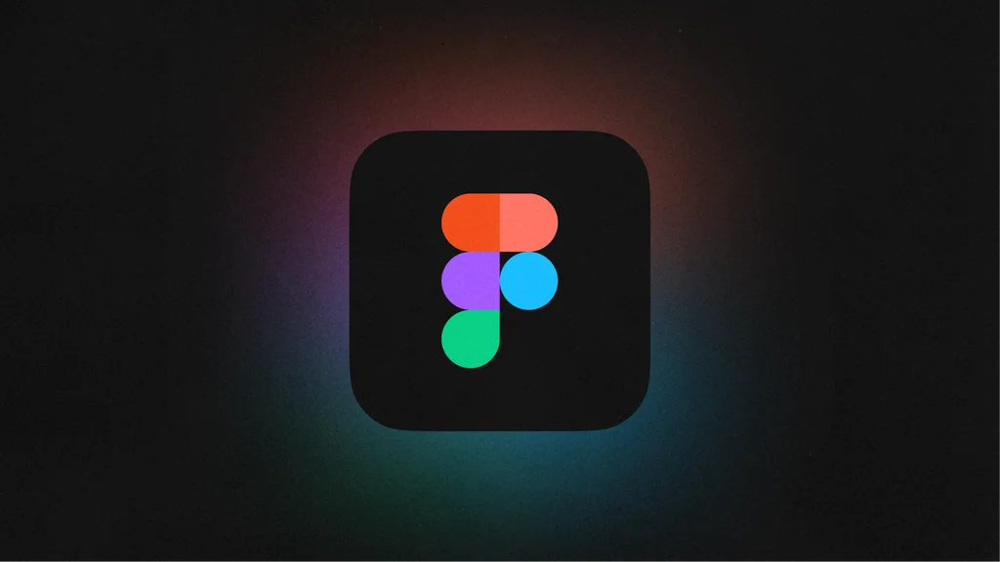
FERRAMENTA EDITOR GRÁFICO
Plataforma colaborativa baseada na web, utilizada para design de UI/UX, prototipagem e desenvolvimento de produtos digitais.
AcessarDOCUMENTÁRIO DUBLADO
Este impressionante documentário conta a incrível história do universo ao longo de bilhões de anos e sua relação direta com a vida na Terra.
AssistirVÍDEO MOTIVAÇÃO
Mentalidade é a chave para o sucesso! As 4 engrenagens que podem transformar sua abordagem e levar suas habilidades a um novo patamar.
AssistirVÍDEO EDUCATIVO
Foco em técnicas para cultivar presença plena e estabelecer limites físicos entre a vida real e o dispositivo.
AssistirPLAYLIST MUSICAS
Músicas onde expressam a fé e esperança, louvor a Deus e transmição de ensinamentos bíblicos, propósito e verdade
Acessar PlaylistPLAYLIST VÍDEOS
Pregações, estudos bíblicos e reflexões espirituais.
Acessar PlaylistO QUE ESTOU APRENDENDO
Desenvolvimento de softfares, lógica de programação e soluções tecnológicas.
Análise de dados, criação de dashboards e visualização de indicadores.
Domínio de ferramentas digitais do Google Workspace, pacote office, e de gestão de projetos e organização.
Criação de artes, interfaces, identidade visual e experiências digitais intuitivas.
Domínio e aplicação de ferramentas de IA, automações e otimização de processos.
Versionamento de código, colaboração, gerenciamento de repositórios e projetos.
REGISTROS DA MINHA TRAJETÓRIA
Pequenos fragmentos de tempo congelados.
01 / 05DESTAQUES
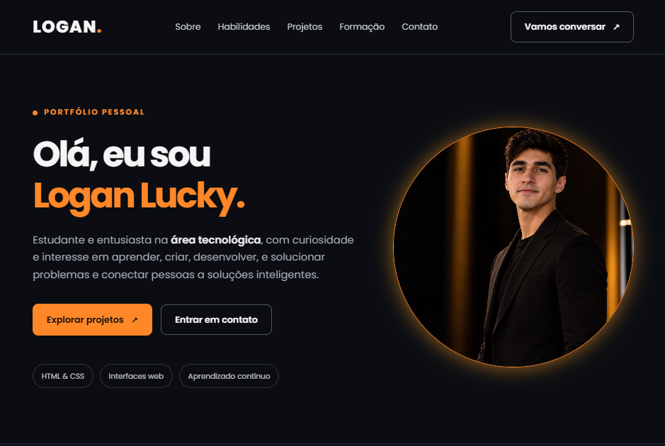
SITE INDIVÍDUAL
Repositório GitHub do site de apresentação profissional e acadêmica.
Ver repositório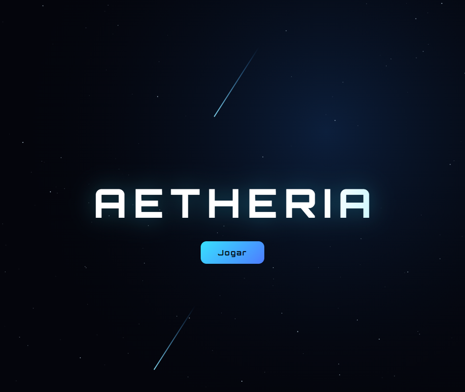
JOGO EM DESENVOLVIMENTO
Jogo inspirado em Agar.io, estruturado em HTML, CSS e JavaScript.
Jogar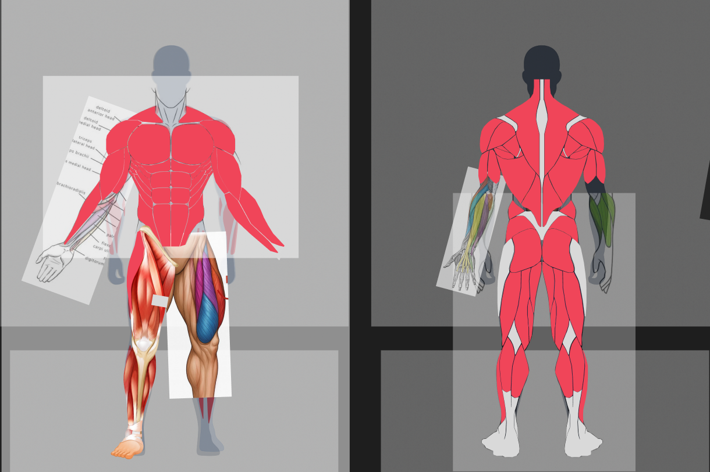
PLATAFORMA FITNESS
Plataforma Fitness inteligente que conecta musculação e tecnologia, te colocando em outro patamar.
Em desenvolvimento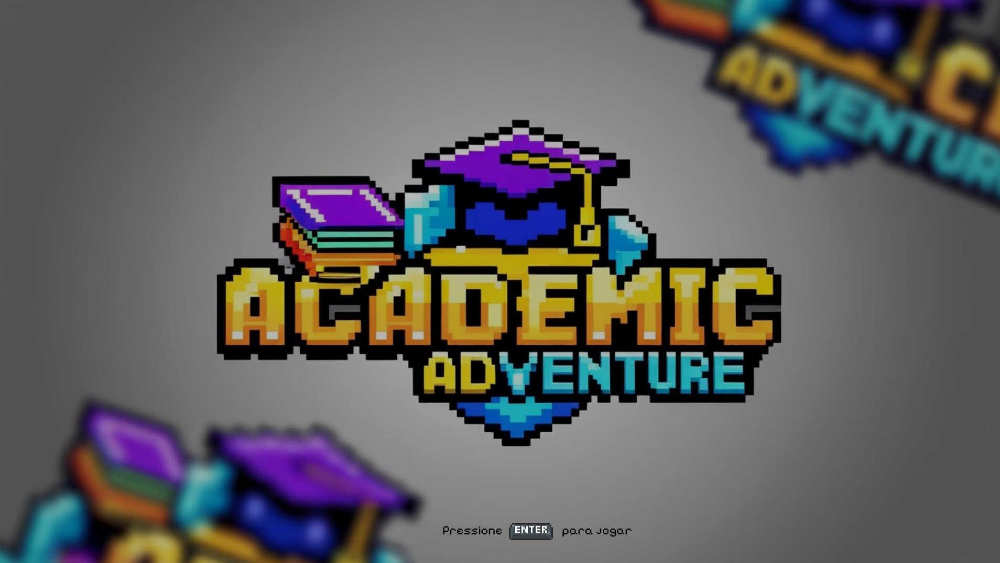
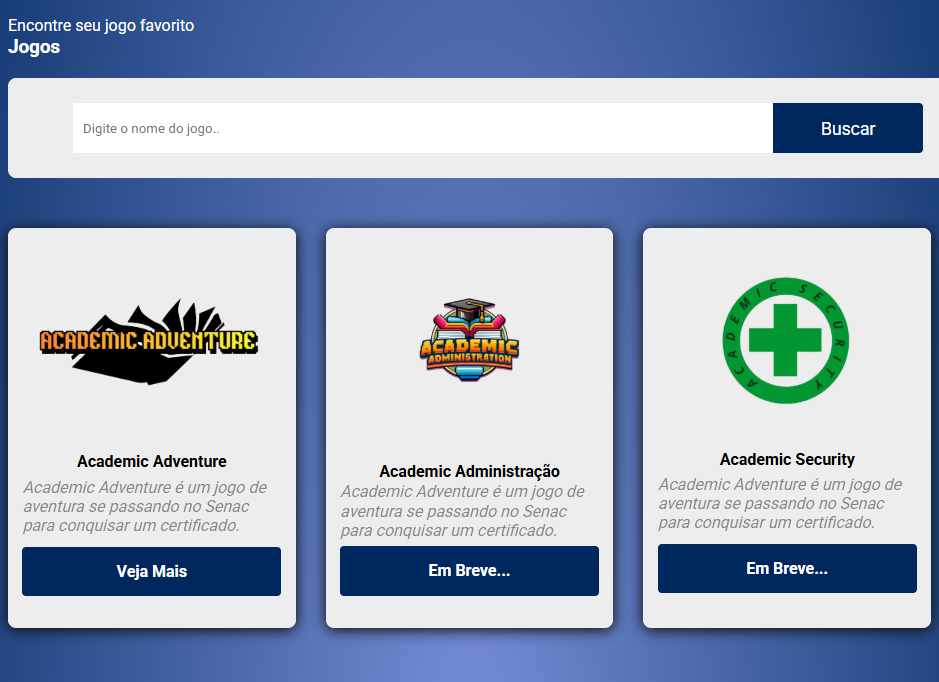
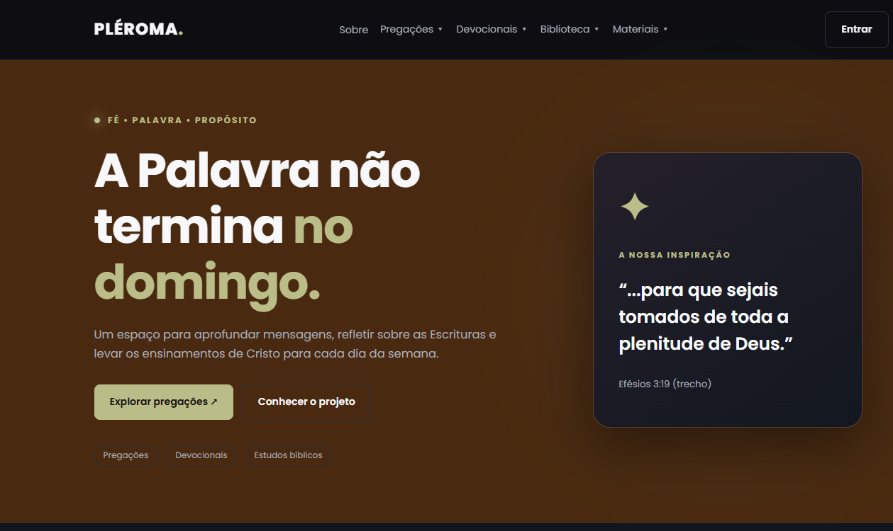
PLATAFORMA CRISTÃ
Plataforma que une tecnologia e palavra de Deus para te levar a um outro patamar espiritual, mental e pessoal.
Em desenvolvimento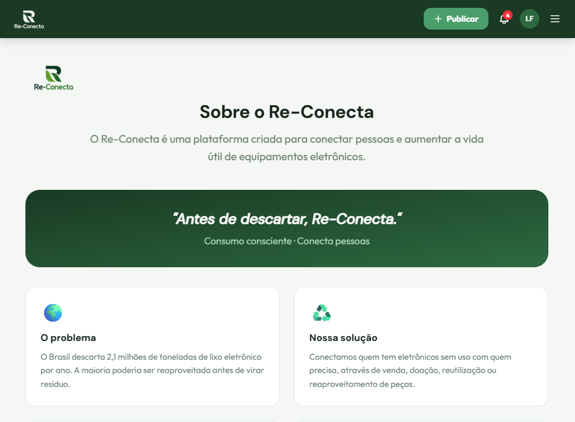
PROJETO SITE
Plataforma que conecta pessoas para doar, trocar e reaproveitar eletrônicos e peças, incentivando o consumo consciente e a redução do lixo eletrônico.
Em desenvolvimento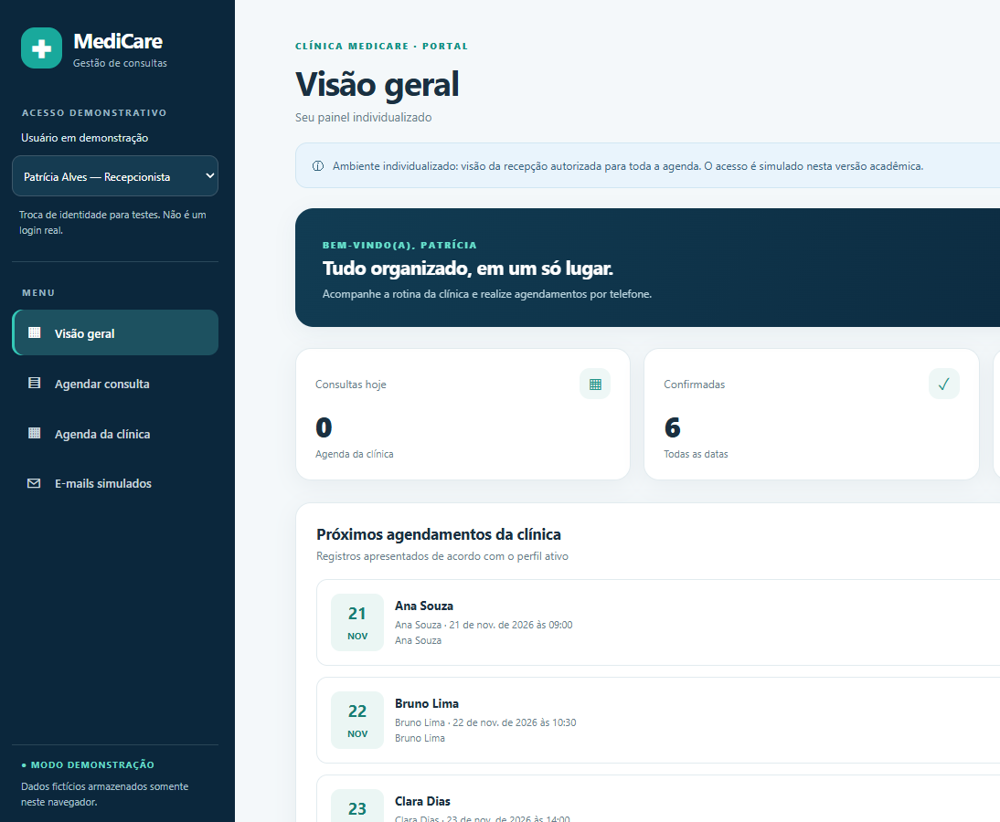
PROJETO SISTEMA
Projeto desenvolvimento sistema web de agendamento médico, com regras de negócio, modelagem UML e protótipo
Em desenvolvimentoEBOOK GRATUITO
Guia completo para ensinar a utilizar recursos semelhantes aos do YouTube Premium com o navegador Brave, sem assinatura Premium.
Baixar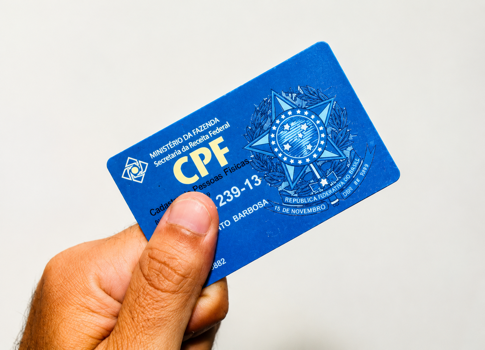
EBOOK GRATUITO
Guia completo para ensinar a proteger seu CPF e evitar fraudes.
BaixarJORNADA
Graduação voltada para programação, desenvolvimento interfaces web, organização de projetos, redes, IA e inovação.
Adicione aqui mais informações sobre esta formação ou experiência: atividades, aprendizados, conquistas e resultados.
Abrangência completa em hardware, redes locais, bancos de dados, algoritmos e desenvolvimento de aplicações para desktop e web..
Adicione aqui mais informações sobre esta formação ou experiência: atividades, aprendizados, conquistas e resultados.
Conquistei a primeira certificação global em conhecimentos Python na academia Cisco Networking Academy.
Adicione aqui mais informações sobre esta formação ou experiência: atividades, aprendizados, conquistas e resultados.
Conquistei a primeira certificação global em conhecimentos Redes na academia Cisco Networking Academy.
Adicione aqui mais informações sobre esta formação ou experiência: atividades, aprendizados, conquistas e resultados.
Conquistei a primeira certificação global em conhecimentos segurança digital na academia Cisco Networking Academy.
Adicione aqui mais informações sobre esta formação ou experiência: atividades, aprendizados, conquistas e resultados.
Foco na gestão de políticas de saúde e segurança, avaliação e controlo de riscos ocupacionais, investigação de acidentes, primeiros socorros, planos de emergência e ações educativas no ambiente laboral.
Adicione aqui mais informações sobre esta formação ou experiência: atividades, aprendizados, conquistas e resultados.
Domínio de análise de dados, otimização de fluxos e estruturação de informações para suporte à decisão
Adicione aqui mais informações sobre esta formação ou experiência: atividades, aprendizados, conquistas e resultados.
Eu juntamente de minha turma TI, desenvolvemos um jogo em python, inspirado em Pokemon, mas que se passa no próprio SenacMinas.
Adicione aqui mais informações sobre esta formação ou experiência: atividades, aprendizados, conquistas e resultados.
Aprofundamento contínuo em Python, automação de processos, controlo de versão com Git e estruturação de ambientes de desenvolvimento eficientes no VS Code.
Adicione aqui mais informações sobre esta formação ou experiência: atividades, aprendizados, conquistas e resultados.
Elaboração e estruturação de planilhas eletrônicas e relatórios gráficos básicos para otimização de fluxos analíticos.
Adicione aqui mais informações sobre esta formação ou experiência: atividades, aprendizados, conquistas e resultados.
Atuação como Suporte geral de TI e auxiliar na gestão e planejamento de escalas eventos.
Adicione aqui mais informações sobre esta formação ou experiência: atividades, aprendizados, conquistas e resultados.
Atendimento consultivo, planejamentos personalizados e soluções financeiras conforme as necessidades dos clientes.
Adicione aqui mais informações sobre esta formação ou experiência: atividades, aprendizados, conquistas e resultados.
Captação e desenvolvimento de novas parcerias estratégicas, contribuindo para o crescimento e expansão da empresa.
Adicione aqui mais informações sobre esta formação ou experiência: atividades, aprendizados, conquistas e resultados.
Prospecão, qualificação B2B, identificação de oportunidades, agendamento de reuniões para operações de crédito estruturado.
Adicione aqui mais informações sobre esta formação ou experiência: atividades, aprendizados, conquistas e resultados.
Atendimento completo e personalizado em eventos sociais, corporativos e confraternizações, incluindo a montagem e organização de ambientes.
Adicione aqui mais informações sobre esta formação ou experiência: atividades, aprendizados, conquistas e resultados.
CONTATO
Investir em conhecimento é investir em você mesmo!